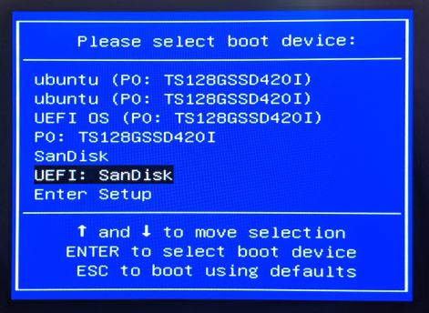

ROS Noetic + Ubuntu 20.04¶
Warning
Rarely, issues may occur with some installs. You should ensure that your research schedule/needs will allow for a possible prolonged troubleshooting phase with your robot(s).
Fetch Robotics has recently started supporting ROS Noetic and Ubuntu 20.04 on Fetch and Freight robots. Other than the process of upgrading a robot, there should be minimal effect on using your robot. If you observe an issue, please let us know via a support ticket.
Known issues¶
Warning
The PS3 controller support was removed with the 20.04 release. You can switch to using a PS4 controller.
Warning
Gazebo11 and the Fetch have some bugs which we are currently aware of. If you use Gazebo, please check the status of this issue on GitHub.
Upgrading Your Robot to ROS Noetic + Ubuntu 20.04¶
Warning
Read this document in full to ensure you understand the procedures. It is not straightforward to go back to ROS Melodic/Ubuntu 18.04, or ROS Indigo/Ubuntu 14.04 after doing this. Ensure your colleagues are on board with doing this upgrade.
This document is a procedure for replacing the contents of your robot’s SSD with an Ubuntu 20.04 install and ROS Noetic. All files will be erased except those you back up!
You can also use this process to re-image your robot, if needed.
Before Upgrade¶
Back up files from the robot! All files will be erased during the install, so make sure to save files specific to your research work. There are a few categories of files to back up:
Calibration and other robot-specific files. By convention, these are all in
/etc/ros/[indigo|melodic|noetic]/Files relating to your research work
A record of what packages you installed for ROS Indigo
Udev rules created for additional hardware (e.g. sensors) added to your robot (not common)
Network hardware configuration (for troubleshooting)
Below, we assume that after logging into the robot (e.g. via ssh) you back up
files to a machine named HOST with username USER.
For (1), we recommend doing:
tar -zcf fetch_robot_files.tar.gz /etc/ros/melodic/
scp fetch_robot_files.tar.gz USER@HOST:~/
For (2), this may include workspaces, logs, and training data. You might even
want to back up the entirety of /opt/ros/melodic if you are unsure.
For (3), you can easily record the list of packages you installed via:
dpkg -l | grep ros-melodic > installed_melodic_packages.txt
As well, you might want to record what repositories are part of your workspaces.
For (4), such files are likely located in /etc/udev/rules.d/, and should be saved.
For (5), this file may be useful for reference if the install process doesn’t automatically set up networking on your robot correctly:
scp /etc/udev/rules.d/70-persistent-net.rules USER@HOST:~/$(hostname)_udev_net_rules
If you are using any additional hardware (sensors), be sure to record what network or other hardware configuration changes were made to get them working.
AUTOMATED INSTALLER: 20.04 and ROS Noetic Install¶
This section guides you through using a custom automated installer that will set up Ubuntu with ROS packages and Fetch customizations for robots. You can alternately do a manual install, which is outlined in the next section.
Important
Back up your files as described in the previous section
Important
This automated installer will not work for setting up a dual booting robot. For this, we recommend following the manual procedure instead, below.
Runstop the robot, to avoid unexpected movement of the robot.
Create the installer USB flash drive using a separate computer:
In a web browser, navigate to http://packages.fetchrobotics.com/images/ and click and download the latest fetch_ubuntu_*.iso
Plug the flash drive into your computer.
In a terminal, run
sudo usb-creator-gtk. This will open a utility for putting the install image onto the flash drive. Select the fetch_ubuntu.iso file (you may have to browse via “Other”. Verify the correct disk is selected in the second listbox, and then click “Make Startup Disk”. (If usb-creator-gtk fails to work, you probably will need to format the disk using, e.g., gParted. After formatting the USB drive, retry usb-creator-gtk)
Install OS with ROS, etc. included:
Plug in the USB flash drive to the robot, as well as a monitor, keyboard and mouse.
Turn the robot on with the power button, and press either F7 or F11 several times to get to the boot device selection window shown in the next step. If you fail to get to a screen like the below, restart the robot and try again:
The name of the correct option in the boot menu varies based on the flash drive you used. Typically, it will be similar to “UEFI (FAT) FlashDrive Name”. See the following images for what to expect and select:

Note
We have only tested English language installs
Once the install gets to the following screen, the post-install script will walk you through the rest of the install.
If the robot is not connected to the internet via an ethernet cable, you will next be prompted to connect to a wifi network in order to install needed packages. Otherwise, you will be prompted whether to also connect to a wifi network.
Next you will be prompted to give the robot’s name. A name other than fetchXX or freightXX will result in a non-robot install of Ubuntu 20.04 (with ROS also installed). We recommend keeping the same hostname for the robot, e.g. fetch1104
Once the terminal window changes from blue to white, user input is no longer needed and you can leave the install to run (15+ minutes, depending on internet speed).
The fetch user will be automatically created, with password ‘robotics’.
Wait for the install to complete. The post-install script will restart fairly quickly, and then resume running/installing after the reboot. It will then reboot a second time, at which point you should see a grey Fetch Robotics desktop background, and the install is complete.
After the install completes, continue to the Post-install Validation section below.
{kind=link}
{kind=link}
{kind=link}
If the installer appears to get stuck, please send a picture of the screen to Support. If it is stuck in one of the initial steps before you get to the language selection screen, you can try re-running the install, or if that fails, recreating the flash drive.
MANUAL APPROACH: 20.04 Install and Installing ROS/Fetch Packages¶
Important
Back up your files as described in the previous section
Runstop the robot, to avoid unexpected movement of the robot.
Install Ubuntu 20.04 on the robot. Download the latest 20.04 Ubuntu installer from http://releases.ubuntu.com/20.04/ (in these instructions we use the Desktop image, version 20.04.2). For help booting from USB, see Accessing Boot Menu on Fetch Robots.
We recommend keeping the same hostname for the robot, e.g. fetch4
You can create the fetch user, or let it be automatically created later. (The typical password for the fetch user is ‘robotics’.)
After install, you may need to unblock apt. Do this by clicking the App Store icon on the sidebar, which should trigger an update prompt you can close:
You’ll probably want to install a few convenience packages such as openssh-server to enable SSH into your robot:
sudo apt install openssh-server net-tools. You might also want to install your favorite commandline text editor.
Update your Ubuntu install:
sudo apt update && sudo apt dist-upgrade -yInstall ROS Noetic by following the instructions on the ROS Wiki. You will want to do steps 1.1 through 1.6. In writing/testing these instructions, we assume:
You use the ROS-Base setup, via the
ros-noetic-ros-basepackage.You are using bash, so step 1.6 for the fetch user is:
echo "source /opt/ros/noetic/setup.bash" >> ~/.bashrc source ~/.bashrc
You can also make this apply for all new users:
sudo su -c 'echo "source /opt/ros/noetic/setup.bash" >> /etc/bash.bashrc'
NOTE: at a later time, Fetch may host and recommend its own mirror of ROS Noetic debians.
Run the following to install Fetch research debians:
General packages for Fetch robots:
sudo apt install ros-noetic-fetch-calibration ros-noetic-fetch-open-auto-dock \ ros-noetic-fetch-navigation ros-noetic-fetch-tools -y
Then install packages specific to the robot type:
export ROBOTTYPE=$(hostname | awk -F'[0-9]' '{print $1}') # sudo apt install $ROBOTTYPE-noetic-config # pending future availability wget http://packages.fetchrobotics.com/binaries/$ROBOTTYPE-noetic-config.deb sudo apt install ./$ROBOTTYPE-noetic-config.deb -yIf you get an error regarding chrony, do sudo apt install chrony, and then try the noetic-config debian install again.
Power cycle the robot:
sudo /sbin/reboot
Post-install Validation¶
This is a direct continuation of either of the previous sections’ procedure. It is assumed that your robot is still runstopped.
Verify that things are working. All of the following steps assume that you are
ssh’d into the robot:
ssh fetch@fetchXXXX
If your robot has not been upgraded in a while, it is likely that it will need to automatically upgrade the firmware on its boards. This can take several minutes to complete after you have rebooted the robot. You can monitor this by doing:
sudo tail -f /var/log/robot.log
You may see messages like the following:
[ WARN] [1554930321.086981030]: Updating wrist_roll_mcb from -1 to 101 [ INFO] [1554930321.087023328]: Updating board 44 [ WARN] [1554930321.094045845]: updating firmware loader for board 0x11 [ WARN] [1554930323.609072063]: updating firmware loader for board 0x11 [ WARN] [1554930323.614075007]: Unexpected response for board 17 : recv_len=20 board_id=17 table_ addr=16 data_len=16 [ WARN] [1554930323.614149147]: Unexpected response for board 38 : recv_len=20 board_id=38 table_ addr=16 data_len=16
If you see the second sort of message, the likely fix is to power cycle the robot again via
rosrun fetch_drivers charger_power reboot.Verify that the robot can ping the mainboard and the laser:
ping 10.42.42.42 # mainboard ping 10.42.42.10 # laser
If not, see Ensuring robot’s ethernet ports are configured correctly.
Verify that the Primesense camera is working (if working with a Fetch robot):
rostopic list head_camera | wc -l
This should output 32, if everything is working fine.
At this point, release the robot’s runstop button.
The gripper should now have power, so we should be able to ping it:
ping 10.42.42.43 # gripper
If the gripper does not respond, please contact support. We are aware of an issue affecting some robots, and are gathering information to identify the cause and best solution.
The arm’s “gravity compensation” should now be working. You should be able to freely move the arm by hand.
If applicable, from your non-robot computer, restore the contents of
/etc/ros/melodicto/etc/ros/noeticon the robot:scp fetch_robot_files.tar.gz fetch@fetchXXX:~/ ssh fetch@fetchXXX sudo mkdir -p /etc/ros/noetic tar -xzf ~/fetch_robot_files.tar.gz /etc/ros/noetic/
Important: You should modify
/etc/ros/noetic/robot.launchto replace any instances ofmelodicwithnoeticAs well, you can restore any other saved files to the robot.
This is the point at which some things may not work fully, e.g. if packages used in ROS Indigo need updates/replacements for ROS Noetic.
Verify that calibration is installed: a date should be output if you run the following command:
fetch@fetch3:~$ calibrate_robot --date 2018-11-26 14:48:04
To restart the drivers so that your restored files are used, with the arm safely resting so that it won’t fall, restart roscore:
sudo service roscore restart
Set up your teleop controller. By default, a fresh install will not have the service for either controller active, and the user will need to enable the appropriate service. (Note, only one or the other can be set up at a time.)
PS4: The PS4 controller is newly supported on our robots with 18.04. The PS4 controller works better than the PS3 controller and is recommended. You can acquire one from e.g. Amazon. Note that third party PS4 controllers may not work.
Pair the controller via the Bluetooth settings in Ubuntu. For more detail, see here.
Disconnect the controller by holding the middle button for 10 seconds.
Connect the controller by pressing the middle button and then waiting until the LED is blue and not flashing.
You can verify that the controller is connected properly by watching the output of
jstest /dev/ps4joyand pressing buttons on the controller.If you did keep your old /etc/ros/melodic/robot.launch and are switching to a PS4 controller, you will need to:
Find and modify/add the following lines in
/etc/ros/noetic/robot.launch:- <include file="$(find freight_bringup)/launch/include/teleop.launch.xml" /> + <include file="$(find freight_bringup)/launch/include/teleop.launch.xml"> + <arg name="ps4" value="true" /> + </include>
Then, with the arm safely resting so that it won’t fall, restart roscore:
sudo service roscore restart
Monitoring
/joytopic should similarly reflect inputs on the controller.The controller should work to teleop the robot.
PS3: No longer supported. You can acquire a PS4 controller instead.
At this point the robot is probably working fine and is ready for use! (Unless you have additional customizations to restore)
Compatibility of Other Computers Used with the Robot¶
For working with a robot running ROS Noetic, we recommend using an 20.04 Ubuntu machine that also has ROS Noetic installed.
In order for the robot to appear correctly in RViz, you will want to:
Ensure your computer is pointed at the packages.ros apt sources
Install
ros-noetic-fetch-descriptionandros-noetic-freight-descriptionpackages. Addtionally you might want to install ros-noetic-fetch-tools.Ensure that these packages are included in your path (e.g.
rospack find fetch_descriptionreturns a path)Common gotcha on a new setup: If the robot model doesn’t appear in RViz at first, you may need to change the “Fixed frame” from e.g. ‘map’ to ‘odom’.
Not Supported: Upgrading from 14.04 to 20.04 (via 16.04)¶
It is theoretically possible to upgrade from 14.04 to 20.04. Fetch Robotics has not tried this. Fetch Robotics does not recommend this approach and cannot provide support for this. However, if you desire to try to upgrade, the following may be helpful:
Back up files as described above, or even the full disk if you like.
You cannot upgrade Ubuntu directly from 14.04 to 20.04. You must first upgrade to 16.04, then upgrade to 20.04. This can take a long time.
You should review the postinstall script for
fetch-noetic-config. It is not targeted at upgrading a system, so additional tweaks may be required after installing it.
Appendices¶
Subsequent upgrade notes¶
When doing an upgrade of the apt packages for your robot, always follow the steps at Updating Your Robot.
Ensuring robot’s ethernet ports are configured correctly¶
If for some reason ethernet ports aren’t configured correctly, check the following setup:
1. Inspect the output of ip address
1. Edit /etc/netplan/99-fetch-ethernet.yaml and make changes if needed
2. Power cycle the robot (only needed if you’re actively having issues).
The robot has two ethernet ports on its computer. You can find more information on this at Computer Overview and Configuration.
A problem you may encounter is if these two ports are “swapped”. This will cause the robot computer to be unable to talk to the rest of its hardware. You can fix this in software or in hardware:
Software: Edit or create
/etc/udev/rules.d/70-persistent-net.rulesand swapeth0andeth1. This maps specific mac addressess to specific ethernet ports. Restart the robot for the change to take effect.OR: Hardware: swap the two ethernet cables where they plug into the computer. This shouldn’t be needed, but in case you do, you should expect to find a gray cable (internal communications) and a blue cable (external). Typically, the blue goes to the top ethernet port, and the grey goes to the bottom.